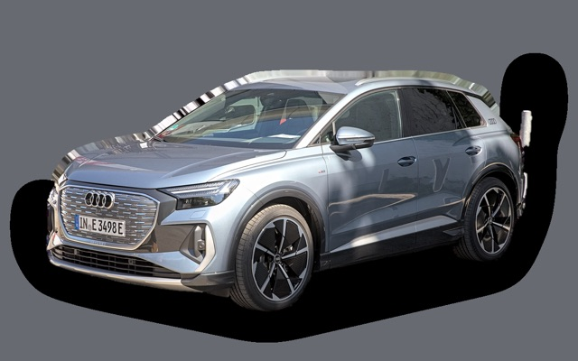

Vad kostar en Ford Mustang Mach-E per månad?
En Ford Mustang Mach-E från 2023 kostar cirka 3 998 kr i månaden, allt inräknat.
3 998 krper månad, årsmodell 2023
378 000 krpris, årsmodell 2023
593 100 krnypris från
Cprisvärdhetsbetyg (2023)


Månadskostnad per årsmodell
| Årsmodell | Version i beräkningen | Pris | Per månad | Betyg |
|---|---|---|---|---|
| 2026 | RWD 73 kWh, Standard | 593 100 kr | 6 262 kr | D |
| 2023 | RWD 73 kWh, Standard | 378 000 kr | 3 998 kr | C |
Räknat på 5 års ägande och 1 250 mil per år, med bränslepriser från 2026-10-22. Månadskostnaden innehåller värdeminskning, drivmedel, service och reparationer, försäkring och fordonsskatt.
Så fördelas kostnaden för en 2023:a
- Värdeminskning: 2 504 kr/mån
- Drivmedel: 439 kr/mån
- Service och reparationer: 361 kr/mån
- Försäkring: 664 kr/mån
- Fordonsskatt: 30 kr/mån
Begagnatpriser i annonser
| Årsmodell | Medianpris | Annonser | Typiskt miltal |
|---|---|---|---|
| 2023 | 402 400 kr | 8 | 4 500 mil |
| 2022 | 342 400 kr | 30 | 5 700 mil |
| 2021 | 309 900 kr | 26 | 7 200 mil |
Medianpriset i svenska annonser per årsmodell i oktober 2026 (källa: Blocket, AutoUncle). Annonspriser är utgångspriser, och slutpriset kan bli lägre.
Motorer och versioner
| Motor | Drivmedel | Effekt | 0–100 km/h | Förbrukning (WLTP) | Räckvidd | Årsmodeller | Pristillägg |
|---|---|---|---|---|---|---|---|
| RWD 73 kWh | El | 269 hk | 6,3 s | 17 kWh/100 km | 440 km | från 2021 | – |
| RWD Extended Range 91 kWh | El | 294 hk | 6,1 s | 16,9 kWh/100 km | 600 km | från 2021 | +40 000 kr |
| AWD Extended Range 91 kWh | El | 351 hk | 5,1 s | 18,8 kWh/100 km | 550 km | från 2021 | +70 000 kr |
| GT AWD 487 | El | 487 hk | 3,7 s | 20,5 kWh/100 km | 490 km | 2022–2022 | +285 900 kr |
- Utrustning: Standard, Premium (+20 000 kr)
Fakta
- Kaross
- SUV
- Årsmodeller
- sedan 2021
- Nypris från
- 593 100 kr
- Bagage
- 402 liter
- Euro NCAP
- 5 av 5 stjärnor
- Nybilsgaranti
- 3 år
- Driftsäkerhet
- 3 av 5
- Helförsäkring, uppskattning
- 10 600 kr/år
- Service, uppskattning
- 2 600 kr/år
Fördelar och nackdelar
Fördel
Rolig att köra och lång räckvidd med stort batteri.
Nackdel
Snabb värdeminskning och begränsad sikt bakåt.
Liknande bilar
 Volvo XC60 I3 991 kr/mån som 2014:a
Volvo XC60 I3 991 kr/mån som 2014:a Cupra Formentor3 983 kr/mån som 2023:a
Cupra Formentor3 983 kr/mån som 2023:a
Audi Q4 e-tron3 971 kr/mån som 2023:a Volvo XC404 032 kr/mån som 2023:a
Volvo XC404 032 kr/mån som 2023:a Lexus NX3 911 kr/mån som 2023:a
Lexus NX3 911 kr/mån som 2023:a Toyota C-HR3 908 kr/mån som 2026:a
Toyota C-HR3 908 kr/mån som 2026:a
Uppdaterad 2026-10-27 · annonsdata okt 2026